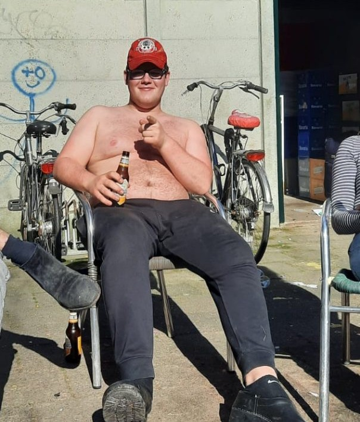

Finn 'FR' Rickhoff
HG sinds: Oktober 2021
Geboren op: 2 Juli 2002
Uit: Oldenzaal
Huisfunctie: -
Studie: Technische bedrijfskunde
Nayade: Waterpolo Heren 3
Bijnaam: "Finncent"
Eervolle vermeldingen
- Oud-Praeses "BakkenFRslinder" der Nayadehuis
- 62e bestuur der E.S.W.Z.V. Nayade 'Klemmen en zwemmen, zonder remmen'
- NACie
- Oud-Bierboer
- Ex-Watje
- Nayadetoernooicommissie 2023 'Back to the Nayadetoernooi'